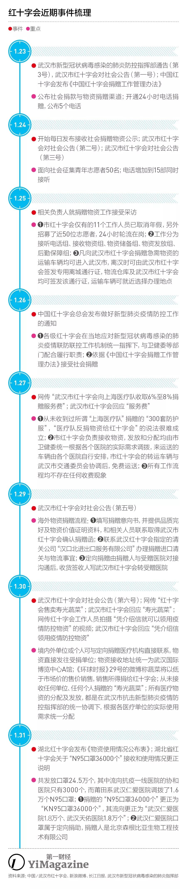
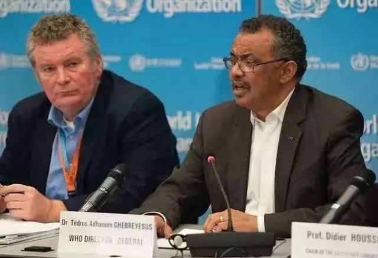
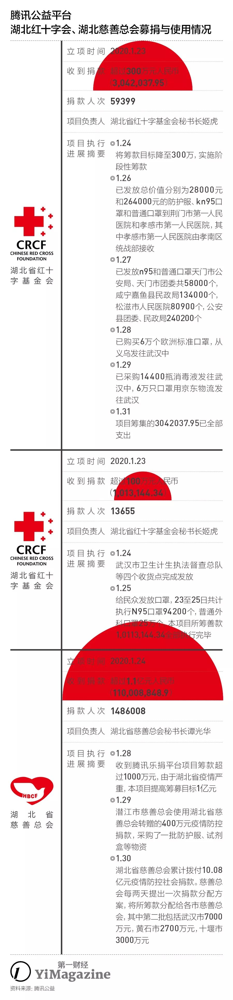
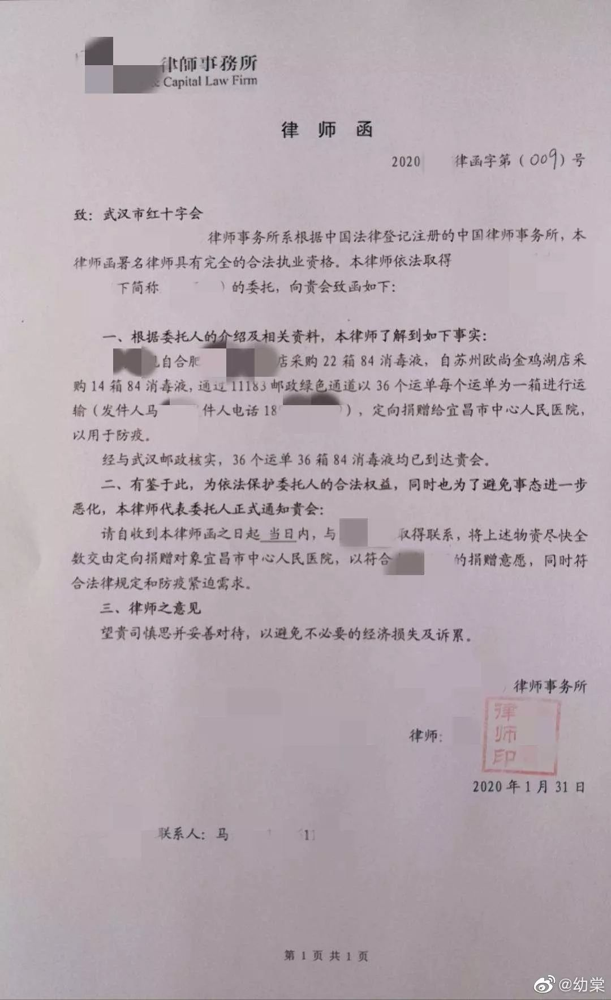
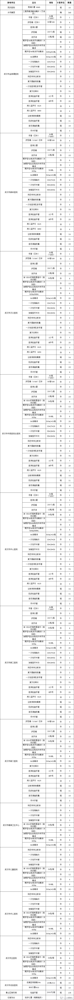

“不是告急，是没有了”——武汉协和医院救援物资之困
原文链接 备份链接 国内外的口罩都在送往武汉，可武汉医院的不仅缺口罩，甚至即将用完。人民日报在其官微发问：究竟是物资紧缺还是物资分配环节存在问题？ 截止到目前，协和医院收到的物资全部来自企业和个人捐赠。物资直接对接到各地疫情指挥部或是各 …

什么拉长了社会捐赠物资从红十字会的仓库到疫情一线医务人员手中的最后短暂的路程？又是谁夺走了医生上战场的武器？
记者 | 郭苏妍 叶雨晨 邓舒夏 王一越
编辑 | 张云亭
制图 | 程 星
2月1日，中国红十字总会工作组赶赴湖北武汉，指导湖北省红十字会、武汉市红十字会做好捐赠款物的接收使用管理工作，确保捐赠款物使用规范高效、公开透明，主动接受社会监督。
在此之前，作为武汉最早一批新冠肺炎定点收治医院，武汉协和医院已经连续多日对外表示医疗物资不够用了。1月30日，一个叫“协和医生Do先生”的微博账号发文称武汉协和医院的物资即将用尽请求社会支援，他在发文中强调“不是告急，是没有了”。31日，该医院另一名医生刘伟再次因“一线防护用品奇缺”而发微博求助。
公众随后将目光转移到湖北省红十字会官网于1月29日披露的一份捐赠物资使用情况表。这份统计清单显示，在其总共发放的24.5万个口罩中，流向武汉协和医院的一共只有3000个未标注型号的口罩，而被媒体称为“莆田系医院”的武汉仁爱医院分到了1.8万个标注为KN95型号的口罩。针对红十字会分配效率与分配公平性的质疑与批评声迅速发酵。
《第一财经》YiMagazine在联系武汉协和医院求证时，该院物资联络人表示1月31日下午已经与武汉市红十字会沟通，但仍未与湖北省红十字会取得有效联系，也尚不清楚对方只向协和医院发放3000个口罩的原因。“按理说定向捐赠给协和医院的物资应该直接寄到医院，但实际上需要捐款人跟医院联系以后，我们再去红十字会领取。货太多了可能存在找不到的情况，我们也不清楚是不是存在他人冒领，而且也不是每个捐赠者都会直接跟协和医院联系。红十字会的工作流程和工作机制我们也不是非常清楚。”他表示。
当天晚上在社交媒体上广泛流传的一个视频显示，在位于武汉市汉阳区国博中心A馆的武汉市红十字会物资接收仓门口，来自湖北省武汉市、黄冈市、咸宁市等地区的医院相关人士均在现场焦急地等待提取物资。据视频拍摄者了解，现场负责物资发放的工作人员仅根据手中的“物资调配表”发放物资，不在这份“调配表”上的医院及机构想要”提货“则需要自行与卫健部门取得联系。许多来到现场的医院相关人士只好空手而归。

位于武汉市汉阳区国博中心A馆的武汉市红十字会物资接收仓。| 图片来源：湖北省红十字会官网
前一天晚上，“医院持介绍信到武汉红十字会仓库自行领取物资”的消息在社交媒体上流传，但武汉红十字会很快向媒体否认此事，并表示所有医疗物资的分配和发放是在武汉市抗击新型肺炎疫情防控指挥部的统一协调下，根据各医疗单位的实际使用需求统一分配。分配权并不在红十字会。
但湖北省疫情防控指挥部的一名工作人员很快否认了这一说法。他在31日接受媒体采访时称，疫情指挥部并不统一负责分配，只审核和批准三家定点机构的分配方案，也未曾修改或驳回湖北省红十字会上报的分配方案。同时，其所在的社会捐赠组并未收到此前湖北省红十字会披露的捐赠物质使用情况表中关于仁爱医院、天佑医院的口罩分配报告，具体分配情况“要问红十字会”。

2月1日，湖北省红十字会官网公布关于捐赠物资分配有关情况的说明。
真假难辨的说法、缺乏可信度的官方声明、不透明的捐赠物资去向公示、混乱迟滞的物资分配和发放流程，都在这个社会所有成员都在尽最大努力避免疫情进一步恶化扩散的当口，把整个流程中极为关键一环的红十字会推上了风口浪尖。而武汉市红十字会常务副会长陈耘则在1月29日对媒体表示“对网上的骂声感到委屈”。
到底是什么拉长了社会捐赠物资从红十字会的仓库到疫情一线医务人员手中的最后短暂的路程？又是谁夺走了医生上战场的武器？

绕不开的红十字会
1月26日，民政部发文，指定湖北省红十字会、湖北省慈善总会、湖北省青少年发展基金会、武汉市慈善总会、武汉市红十字会作为武汉疫情捐赠物资的接收单位，除定向捐赠外，原则上服从湖北省、武汉市等地肺炎防控指挥部的统一调配。
1月27日晚，湖北省召开新型冠状病毒感染的肺炎疫情防疫工作例行新闻发布会。湖北省委副书记、武汉市委书记马国强强调，所有捐赠的物资一定要通过红十字会，以保证捐赠物资和资金的使用能够及时准确登记在案，统一归口，避免在疫情防疫防治过程中，由于混乱被人钻空子。
即便在明确接收单位的情况下，“钻空子”的情况也频频发生。一位不愿具名的志愿者告诉《第一财经》YiMagazine，有的人冒充医院相关人员去劫物资，被发现了就说自己是红十字会的。“政府让红十字会来统管合乎情理，但问题是如何有效地把几十吨上百吨的物资扑到一线去。”他说，“有些捐赠者的物资到达以后要通过各种关系才能拿出货给到当地医院，还有一些志愿者有私心，常常会给自己本区的医院多分一些物资。”
所有捐赠物资都要通过红十字会的初衷是为了避免混乱，但看起来，新的混乱并未减少。
1月31日凌晨，世界卫生组织总干事谭德塞宣布新型冠状病毒感染的肺炎疫情构成“国际关注的突发公共卫生事件”，这个在2002年至2003年非典疫情过后才被创造出来的名词表明了事态的严重程度。但非典时期的主要疫区城市里并没有武汉以及湖北省的其他城市，在应对突发性的公共卫生事件时，当地是缺乏应对经验的——北京、上海、广州、香港均在非典疫情过后总结出一套自己的应对防控方案，并对医疗体系作出调整。

1月31日凌晨，世界卫生组织宣布新型冠状病毒感染的肺炎疫情构成“国际关注的突发公共卫生事件”。
这也是让陈耘和武汉市红十字会感到“委屈”的地方。武汉市红十字会只有10名工作人员，而湖北省红十字会也只有20多个人，人手非常紧张。如果不是统计局安排了三十多个人来专门负责物资的清点登记，“一个人变成十个人也忙不过来”。而目前的情势已经让整个红十字会处在超负荷运转的状态。1月24日，武汉市红十字会面向社会征集50名志愿者，接听电话增加到16部，24小时轮流转岗。加上市红十字会原本的11名工作人员，一共有大约60名工作人员被分配到接听电话组、接收物资组、物资储备组、物资发放组和后勤保障组。某红十字会后备志愿者向《第一财经》YiMagazine透露，截止到31日晚，志愿者后备人员超过了280名，但大多数志愿者仅经过短暂的培训就迅速上岗，工作中的混乱无法避免。
《第一财经》YiMagazine在1月31日下午致电武汉市红十字会时，对方也表示自己是下午刚到的志愿者，对许多关于物资分配、捐赠明细公示及更正等情况并不清楚，只能对接捐赠事宜。
帮助企业对接物资的志愿者刘武华正在协调一批由非洲塞内加尔华人捐赠的医疗物资，他描述一次面向湖北省医疗机构的捐赠流程大致是这样：捐赠人在联系慈善总会后，对方会安排一名志愿者去做对应的服务，包括填写表格、建群联系、确认物资等环节。捐赠人将物资从机场发回国，过完海关以后直接送达湖北省慈善总会，再由总会分拨给红十字会按照各大医院的需求分配调度。定向捐赠的捐赠者则需要提前联系相关医院，明确赠与物资与数量，列出明细清单，紧接着再由医院自己的志愿者拿着“敲过医院公章的证明文件”，去找红十字会审批核实物资的捐赠人和捐赠对象，同时慈善总会也会出具相对应的证明。完整地走完这个流程，医院才能比较顺利地把货拿出来。
此外，陈耘曾表示，如果是定向捐赠，在事先告知红会，并形成文字性的正式捐赠手续之后，可以“把货直接发给受捐单位”，这也出现在《武汉市红十字会对社会公告第六号》文件中。但至于为什么有大量通过中国邮政、顺丰走医疗物资绿色通道运入湖北省的货物最终是由红十字会签收，却并未及时发放给定向医院，武汉协和医院的物资联络人也感到十分困惑，表示“仍需要继续沟通了解情况”，而红十字会方面则至今尚未就此作出正式回应。
在被临时征用为仓库的武汉国际博览中心A馆，堆积着大量社会捐赠的物资。武汉市常务副市长胡亚波解释称，其中除了部分物资是定点捐赠的以外，还有相当一部分不符合医用标准。不过，某新冠肺炎定点收治医院的徐姓医生告诉《第一财经》YiMagazine，“我们也会收到核查下来不符合医用标准的口罩，比如过滤标准达到了但是带呼吸阀，这些口罩不是完全不可以用，应急情况下非一线非重症的医院工作人员也可以佩戴。”
这就是为何红十字会成为本次民间物资运输的舆论中心。一方面当前武汉“封城封路”，物资运送往往需要红十字会及接收单位同时开具证明。这样的政策是为了防止不合格的物资蒙混过关，或者口罩以捐赠的名义流入市场销售，但同时也降低了民间捐助的效率；另一方面海外捐赠物资入境需要红十字会的接收才能减免关税，否则物资的总成本将远超市场价。
但其本身运作模式的低效不但让许多捐赠人意识到，自己的物资即便合格也无法及时到达医院手里，更重要的是，它似乎不能公正地分配物资到更急需的医院手中。
据某基金会资深工作人员陈羽介绍，2008年汶川地震的早期也发生了许多资源浪费，但中后期就学习了经验。在大灾难面前，重要的是建立网络，比如防控指挥部、红十字会、卫健委、医院之间建立数据对接，而防控指挥部、志愿者与民间机构之间也要建立信息对接。此外，那时的民间社会组织可以通过挂靠腾讯公益、壹基金等来筹款捐赠进入汶川。

“区别在于目前的武汉被封城了，志愿者无法前往现场建立数据对接，湖北本地的社会组织也不够发达。而因为指定了接收捐赠的机构，腾讯等慈善企业无法挂靠筹款，民间物资很难有渠道送达疫区。”他向《第一财经》YiMagazine解释说，“湖北慈善总会如果跟本土的社会组织形成合作，形成物流调配也许可行，但传染病性质的疫情在调动更多人参与时需要去对这种风险做评估。而官僚系统内就会有顾虑，这是官员决策时缺乏担当的表现。”自2001年5月，湖北省红十字会由省卫生厅代管改为省政府分管领导联系。
绕过红十字会
1月23日是一个关键转折点，武汉正式“封城”。这是非典时期也没有执行过的紧急措施，许多民间爱心人士以及海外华人华侨开始真正意识到“事情可能比非典更严重”。此外，这也意味着，如果在封城之前未做好充足的交通运输备选方案，它将会变成后续民间物资运输的主要问题所在。
“封城后，政府对进出武汉的车辆把控很严，不能随意进出城，这导致外面的物资进不来，今早我们去送口罩的时候，很多医疗单位已经没有口罩了。”李青曾于1月25日告诉《第一财经》YiMagazine。他是武汉一家零售公司的供应商，拥有自己的车队，当地疫情严重后，李青除了向武汉运送水果、蔬菜等商品，还自掏腰包购买口罩、防护服等物资，捐往武汉和周边城市的医院。后来李青也帮助一些企业将捐赠的物资送达医院。至于为什么没有选择将物资给到红十字会，李青的回答是“红十字会没有那么多工作人员去配送的，这是突发事件，他们的人员有限。”
李青所在的自发捐赠的小群体成员只有不到10个人，因为不是企业所以没有公章。他有一批口罩打算捐赠给社区卫生服务站，运送目的地有40多个地方，而他和这些社区服务站之间只有电话联系，“等实地跑一遍收集齐了章，恐怕都到下个月了。”李青对《第一财经》YiMagazine说。
要把这批物资从仙桃市运出到武汉，李青需要接收单位提供盖章的接收条。“实际上对方收到物资后都会给我们提供接收函或者收条，而前期就让对方盖章太麻烦了，有的医院也不一定愿意承担这个风险。”李青不明白为什么政府不能通融，让他把物资送达后再来补齐证明，“非要前期去纠结这个事儿。”但最终，李青还是集齐了接收单位证明，顺利将物资送了出去。另一个同样遇到这个问题的志愿团队则通过“其他方式”将物资顺利运出，对方称不方便透露具体的操作方式，只感叹道“蒙混过关了，像做贼似的。”
一些企业在决定捐赠医疗物资时也会尝试避开红十字会“中转”以提高效率。石磊为其所在的公司在7天之内采购到了几十万只口罩，并提前通过多个渠道与相关部门打好招呼，寻找愿意前往湖北“有去无回”的物流人员运输货物，将这批完全符合医用标准的物资送到了湖北省内仅次于武汉市的疫情重灾区黄冈，接收单位是黄冈市疫情防护中心。“从找口罩到找物流再到找接收单位，并确保每一步都能按部就班，这个过程非常辛苦。7天时间，我和我的同事打了超过1000个电话。”石磊对《第一财经》YiMagazine说，“现在去往湖北的物流，去一个少一个，因为到达湖北返程后就要直接隔离14天，司机本身也存在感染风险，’有去无回’的，特别悲壮。”
刘亚出于对透明度和运作效率的不信任没有考虑通过红十字会来向各个城市的医疗系统输送医疗物资，她从1月23日开始在俄罗斯采购符合医用标准的3M N95医用级别的口罩以及符合欧洲标准FFP2、FFP3的口罩。“之前没有预料到疫情会到这种程度，更没有预料到医疗物资会瞬间短缺。”刘亚是上海俄尚贸易有限公司中俄国际物流部负责人，了解跨境物流的相关流程和手续，为了加快医疗物资到达医护人员手中的速度，她一边用私人资金全款垫付采购医疗物资的费用，一边安排物资发回，并通过自己的人脉圈寻找理想的接收单位。
寻找物资和接收单位都是极其耗费心力的工作。国内和俄罗斯存在五个小时的时差，俄罗斯当地的工作节奏较慢，确认每个订单都需要大量的时间和精力。“作为口罩行业的外行人，为了确保采购的口罩都是合格的，我做了非常多的功课和比对筛选，以及俄汉英三语翻译的工作。”刘亚对《第一财经》YiMagazine说，在寻找对疫区有捐赠意向的企业以及慈善机构来接收口罩的过程中，她还碰到了许多想拿货转手卖掉的商家，“没什么办法能让这些困难变得容易一点，只是看看武汉那些医生的照片和视频，看看确诊人数的增长数字，除了继续找，别无他法。”
截至1月31日，她一共向国内运送了超过5万个口罩，还有10万个不同型号的口罩订单已经下单等待交货，接收单位包括浙江疾控中心、狮子会上海分部以及部分上海市内医院等。一次医疗物资从采购付款、提货发出、再空运到达国内的时间，一般在3天左右，海关绿色通道开启后，整个流程变得更快了。为了让医疗机构和接收单位能够及时确认物资的资质，刘亚在采购时还会要求厂家和供货商提供包括医疗证等在内的所有相关证件，因为俄罗斯做公证件需要2-3天耗时太久，她就在俄罗斯当地找了拥有俄汉翻译家资质（直接为公证处翻译文件资质）的朋友，及时将相关文件翻译好中俄对应版本，以免在接收过程中发生时间损耗。
对“透明度”的不信任，同样存在于民间捐助。起初李青加入了许多大大小小的民间捐助群，但最后都退群了，只对接自己团队的资源。“觉得（大群）很复杂，不如几个朋友做点力所能及的事情。”
他曾在一个捐助群中看到，有人冒充厂家添加武汉某医院工作人员微信，称看到了医院物资短缺的求助公告，告知医生自己的厂子目前还有2000个符合标准的口罩，售价1元1个，问医院是否愿意购买。在得知医院“目前只以接受捐赠为主”后，厂商称自己可以捐助500个，但是自己也要找人去配送，向医院索要车费油费200元，并提供自己的支付宝收款码，收款后就删除了医院工作人员的微信。
杨志新是多个武汉捐助群的群主，曾看到过一个西雅图留学生包机运送物资到武汉的消息，在他看来这很可能是一个假消息——包机需要至少300万人民币，并且需要征得机场的同意，办理手续就需要至少15天的时间，但现在机场没有接收到这方面的信息。“我们验证不到这个信息也不敢信，但不排除之后对方可自证。留学生圈子里资源背景关系通天的人很多，可能他们有特殊手段。”杨志新说。
许多明星的后援会粉丝团甚至都表现出了极高的执行能力，从发起捐款到筹集物资并定向输送的过程都会由这些自发群体全程把控。一个由吴亦凡粉丝组成的名叫“吴亦凡梦想行走团”的50人规模的公益团体就成功向湖北省咸宁市结核病防治院捐赠了10万双丁腈手套，从1月23日开始筹划到1月27日物资到达医院，一共只花了4天时间。据该公益团成员毛儿介绍，团队在跟湖北咸宁的志愿者取得联系后，首先与接收医院提前沟通了其计划采购的丁腈手套是否符合医用标准，在得到确认的答复后，就开始动用一切力量采购物资、查询可以通行的途经高速、寻找能去往咸宁的物流，与志愿者沟通协助引导司机在疫区外卸货，然后将物资交由志愿者来负责完成到医院的交接。毛儿表示下周三左右，还会有一批德国的3M 8810型号及FFP2和FFP3标准的口罩空运过来。
虽然民间组织作为多渠道运送物资目前看来是一种高效的方式，但更多问题仍然在于捐赠信息的难辨真假、各路关卡放行、医院需求信息的对接等问题，因此，哪怕是民间力量，也需要一个有力的协调平台。
但湖北疫情防控指挥部与红十字会显然目前还无暇顾及民间力量的层面，事实上，对于物资如何高效、公正地分配，都还没有更多的解决方案。1月31日晚间的湖北新冠肺炎疫情新闻发布会上，武汉市政府党组成员李强公布武汉市红十字会截至1月30日共接收到27笔社会捐赠的防疫急需物资，大类有口罩9316箱，防护服74122套，护目镜80456个，还有其他的药品和医疗器械。他在回应医院物资仍存在较大缺口的问题时表示，原因是多方面的，一是消耗量大于供应量，二是红十字会在官网发布了急需物资，但是捐赠物资和急需物资从品种、型号和标准，不是很好对应。此外，工作中也存在周转不够快、调拨不够及时等问题，需要不断改进。

某网友称，通过民间组织捐赠给宜昌市中心医院的物资到达武汉红十字会仓库后迟迟不分配，最后不得不经支援组织者发出律师函才让物资继续前进。
过去一周之内，全国海关共验放进境口罩5622.8万个，防护服73.8万件。但前期所有的加快速度往往都卡在了红十字会向后分发的这一环，而红十字会也没有厘清手续齐全和疫情防控两者之间的优先级。从红十字会跟疫情防控指挥部之间的相互推诿和职责不明可以看出，作为物资分配平台，自身内部的权责分配工作还未完成。
而政府调配物资在这场全民关注的公共卫生突发事件中的失语，其实才是整件事情背后更大的信息不透明。财政部紧急下拨了10亿元补助资金支持湖北疫情防控，并临时征用了全国范围内的所有具备正规资质的口罩、护目镜、防护服等医疗物资生产工厂，统一调配物资分发，但疫情发源地及重灾区武汉乃至整个湖北省的大大小小的医院至今仍旧普遍缺乏医用口罩、防护服等一系列物资，第一批被划入肺炎治疗定点医院的武汉协和医院的医生仍然需要不断借助社交媒体向外发声求助。
“医院向社会求助看起来是很奇怪的，这种时候按理说应该是国家负责统筹物资，评估医院需求，有缺口就及时补上，因为政府一定比民间更高效。社会NGO应该介入的其实是那些无法评估的、需要社会组织来介入的地方，比如环卫工人和快递员等问题。”陈羽说。
2月1日凌晨，武汉红十字会在其官方微博“博爱江城”上公布了截止到1月30日的最新物资发放清单，清单显示其对包括金银潭医院、肺科医院、汉口医院在内的重点收治新冠肺炎病人的医院均分配了医用口罩、护目镜、医用手套等在内一系列医疗物资，但当前短缺的医用口罩以“件”计数，并未明确公示具体数量，与此同时，始终在疫情一线医疗物资多次宣布告急的协和医院依然并未出现在这份清单上。

2020年1月30日武汉市红十字会发放物资一览表。| 图片来源：武汉红十字会官方微博
财联社最早曝光，武汉新冠肺炎防控指挥部已指派湖北九州通医药集团，赴被临时征用为红十字会仓库的武汉汉阳国博中心分装医疗防护物资。然后，九州通相关人士向《每日经济新闻》记者解释，“因为物资比较多，这个主要是协助红十字会妥善管理物资，并不负责后续的分发配送。”
（应采访对象要求，文中李青、杨志新、陈羽为化名。）
本文版权归第一财经所有，
未经许可不得转载或翻译。

原文链接 备份链接 国内外的口罩都在送往武汉，可武汉医院的不仅缺口罩，甚至即将用完。人民日报在其官微发问：究竟是物资紧缺还是物资分配环节存在问题？ 截止到目前，协和医院收到的物资全部来自企业和个人捐赠。物资直接对接到各地疫情指挥部或是各 …
原文链接 备份链接 【财新网】（记者 钱童）一面是全球企业和机构各类物资支援，一面是医院领不到物资公开向社会求援，防疫物资到底在哪里？多位工厂、捐赠和采购方人士告诉财新记者，目前确实面临瓶颈：国内生产或者捐赠的物资被接管，统一调配，多有 …
原文链接 备份链接 01.02.2020本文字数：3601，阅读时长大约6分钟 导读：关于一线医院防护物资紧缺的消息满天飞，湖北省红十字会、武汉红十字会物资分配效率和公平性问题引发质疑。 作者 | 第一财经 李澄晚 1月31日下午，涂先 …
原文链接 备份链接 海内外源源不断捐赠武汉，各大医院仍全面告急。被指定接收捐赠物资的主要机构湖北省与武汉市红十字会系统成为众矢之的，他们原本应该为重大突发事件做好准备，却一开始就因专业能力不足遭遇了信任危机。 本刊记者探访了武汉红十字会位 …
原文链接 备份链接 武汉市已将所有捐赠物资集中统一调配，这有助于物尽其用，但配送效率亟须提升。这几日陆续有社会捐赠物资送到武汉协和医院，但仅有一线医护人员能穿上防护服，很多医用物资仍然紧缺 文 |《财经》 …